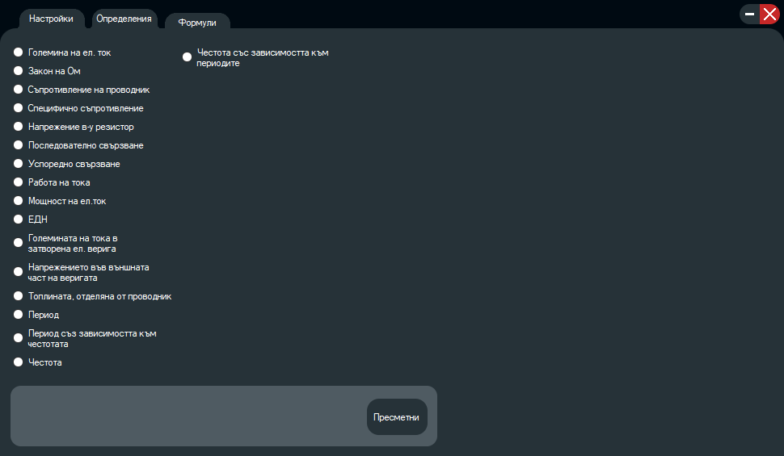

PhysicsCalc 9G
Програмата Physics Calc 9G служи на ученици да усвоят материала по “Физика и астрономия” бързо и лесно.
Physics Calc 9G допринася за опазване на природните ресурси и намаляването на замърсяването на околната среда, тъй като с него отпада нуждата от използването на хартиени учебници.
Най-новата версия е 1.0.0.7. Планувано е калкулатора да се надгражда периодично с нови формули и определения.

Автори
- Момчил Калестров - графиките и функции
- Георги Веселинов - формули и поддръжка
- Боян Копринков - определения и поддръжка
Прогрес
-
GitHub
Графичен дизайн
Формулите и определенията от първия срок
Формулите и определенията от втория срок
Завършване на калкулатора
Галерия

Physics Calc за 8 клас
Калкулатор по “Физика и астрономия” за 8 клас написан в C#. Трябва да се компилира.
Автори
- Момчил Калестров - графичен дизайн
- Георги Веселинов - формули
- Боян Копринков - определения
Прогрес
- Създаване на GitHub
- Създаване на графичен дизайн
- Добавяне на формулите и определенията от първия срок
- Добавяне на формулите и определенията от втория срок
- Завършване на калкулатора
Лиценз
Програмата е под AGPLv3 лиценз:
The GNU Affero General Public License is a free, copyleft license for software and other kinds of works, specifically designed to ensure cooperation with the community in the case of network server software. The licenses for most software and other practical works are designed to take away your freedom to share and change the works. By contrast, our General Public Licenses are intended to guarantee your freedom to share and change all versions of a program–to make sure it remains free software for all its users.
When we speak of free software, we are referring to freedom, not price. Our General Public Licenses are designed to make sure that you have the freedom to distribute copies of free software (and charge for them if you wish), that you receive source code or can get it if you want it, that you can change the software or use pieces of it in new free programs, and that you know you can do these things. Developers that use our General Public Licenses protect your rights with two steps: (1) assert copyright on the software, and (2) offer you this License which gives you legal permission to copy, distribute and/or modify the software.
A secondary benefit of defending all users’ freedom is that improvements made in alternate versions of the program, if they receive widespread use, become available for other developers to incorporate. Many developers of free software are heartened and encouraged by the resulting cooperation. However, in the case of software used on network servers, this result may fail to come about. The GNU General Public License permits making a modified version and letting the public access it on a server without ever releasing its source code to the public.
The GNU Affero General Public License is designed specifically to ensure that, in such cases, the modified source code becomes available to the community. It requires the operator of a network server to provide the source code of the modified version running there to the users of that server. Therefore, public use of a modified version, on a publicly accessible server, gives the public access to the source code of the modified version.
An older license, called the Affero General Public License and published by Affero, was designed to accomplish similar goals. This is a different license, not a version of the Affero GPL, but Affero has released a new version of the Affero GPL which permits relicensing under this license.
The precise terms and conditions for copying, distribution and modification follow.